Vinil
Toca-discos com prato estroboscópico, braço que desce no play e avança com a música, 33⅓ ou 45 RPM e pitch.
Lume Music 5.1.3
Um player de música que entende você. Vinil, fita K7, ondas que dançam com a batida — tudo em vidro, no seu iPhone e no seu Android.
Acesso com teste grátis · Veja como instalar no iPhone e no Android.
Primeira abertura
Na primeira abertura você escolhe seus estilos com toque e som, escolhe seus artistas, e a Lume monta tudo com a sua cara em menos de um minuto.
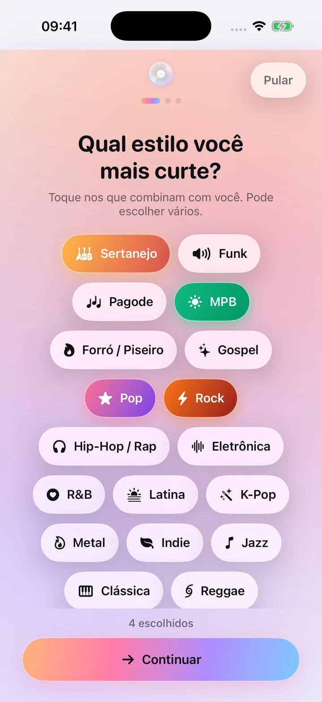
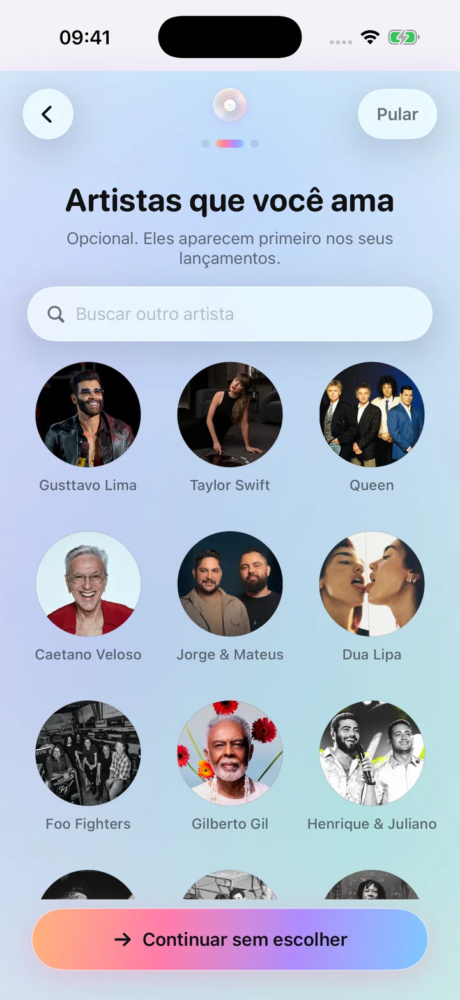
Tocando agora
O mesmo som, três jeitos de viver cada faixa. Troque quando quiser, com um toque.
Toca-discos com prato estroboscópico, braço que desce no play e avança com a música, 33⅓ ou 45 RPM e pitch.
Etiqueta escrita à mão com a capa do disco, carretéis que acompanham a música, Lado A e Lado B.
Fitas de vidro que reagem de verdade às batidas.
4 edições de disco, 4 estilos de fita, tema claro e escuro.
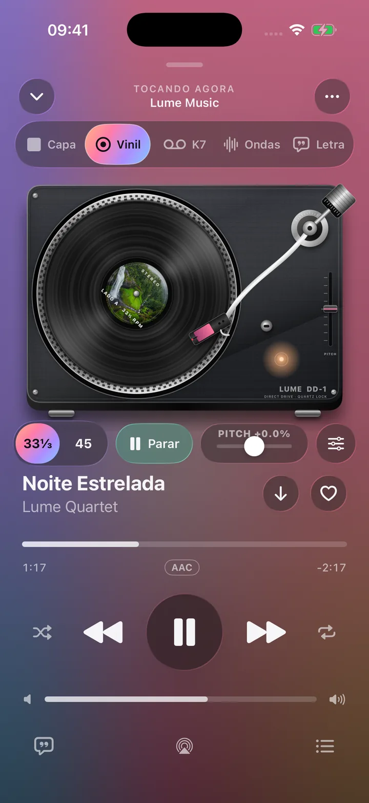
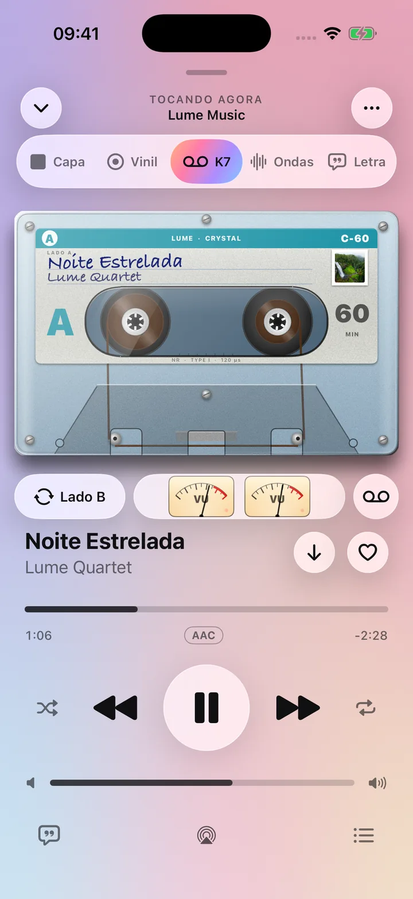
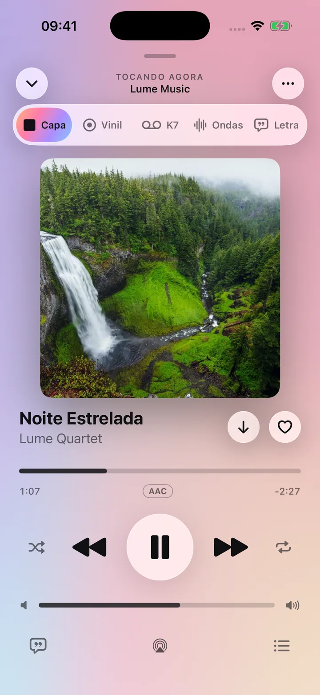
Cover Flow
Vire o celular e as capas ganham vida em 3D, com reflexo no chão. Toque numa capa e ela gira mostrando as faixas.
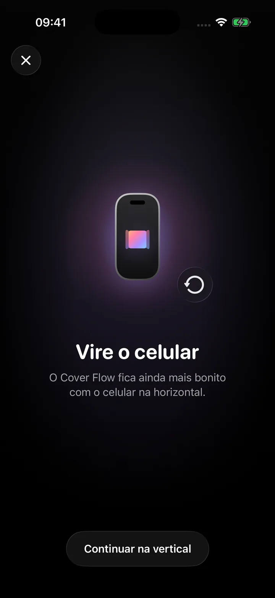
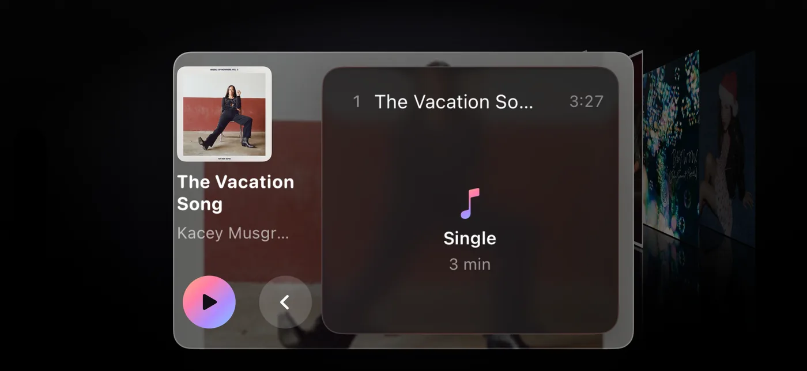
Por dentro
Do início às paradas, da biblioteca à busca. Deslize para ver.
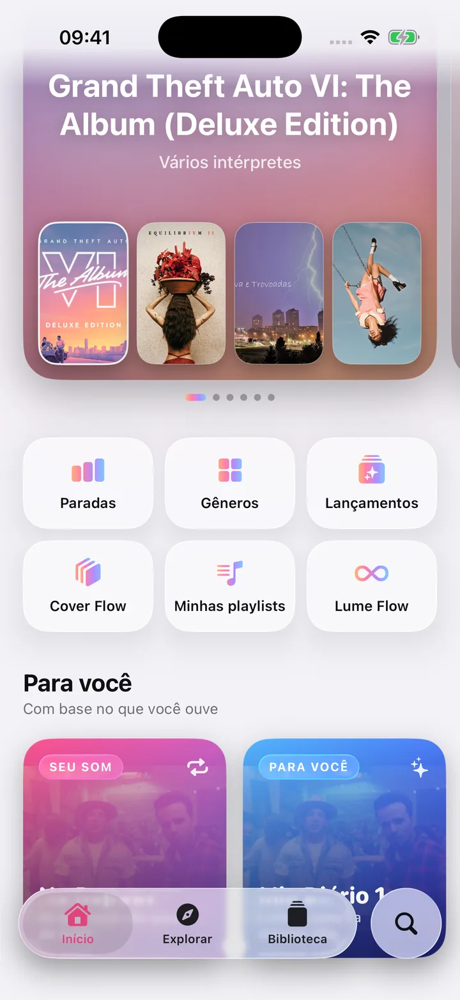
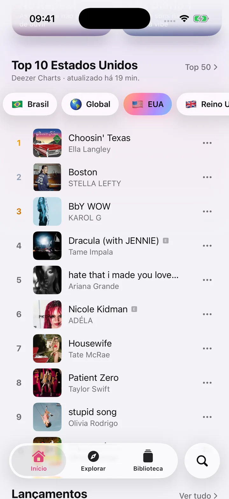
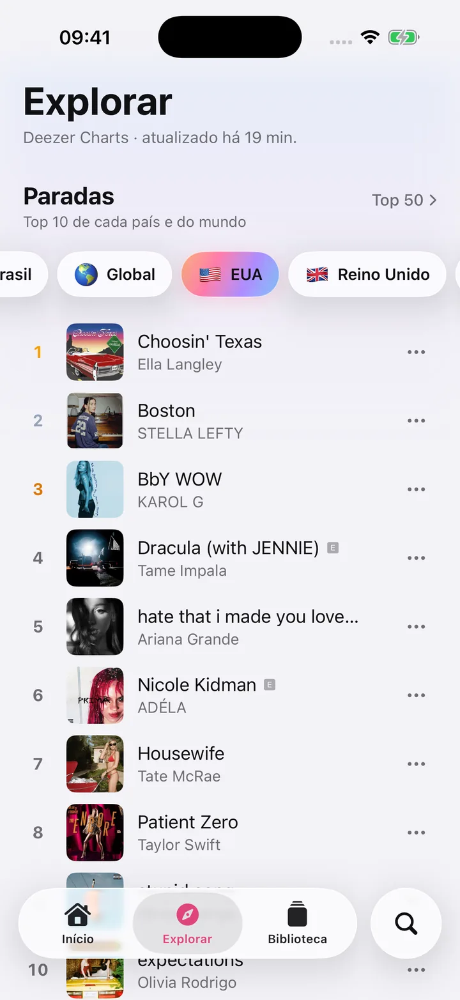
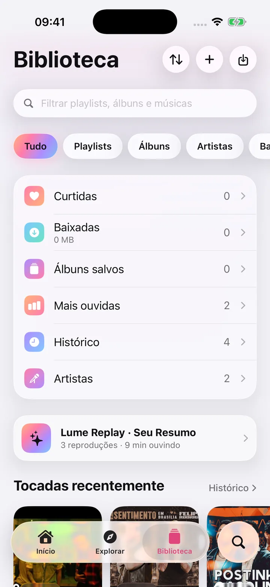
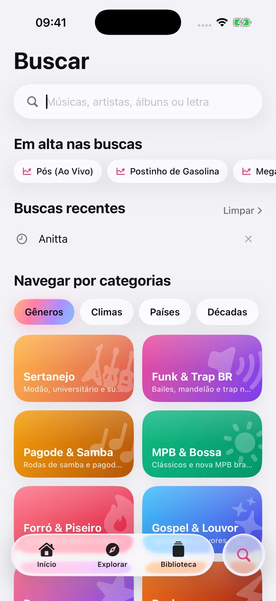
Carregando
A Lume reúne as suas músicas e arruma a estante para você. Enquanto isso, uma animação de vidro mostra cada passo. Em segundos, tudo está pronto para tocar.
Importar
Importe suas playlists do Apple Music, Spotify, YouTube Music, Deezer, Amazon Music, Tidal ou de um arquivo.
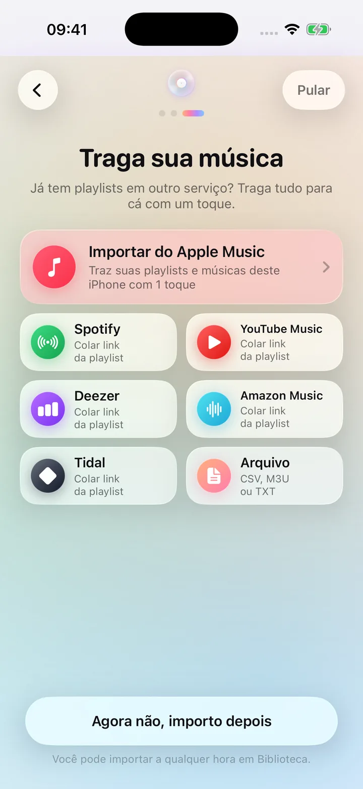
Acesso exclusivo
Entre com o seu código de acesso de 6 caracteres. O app mostra na hora a validade — meses ou vitalício.
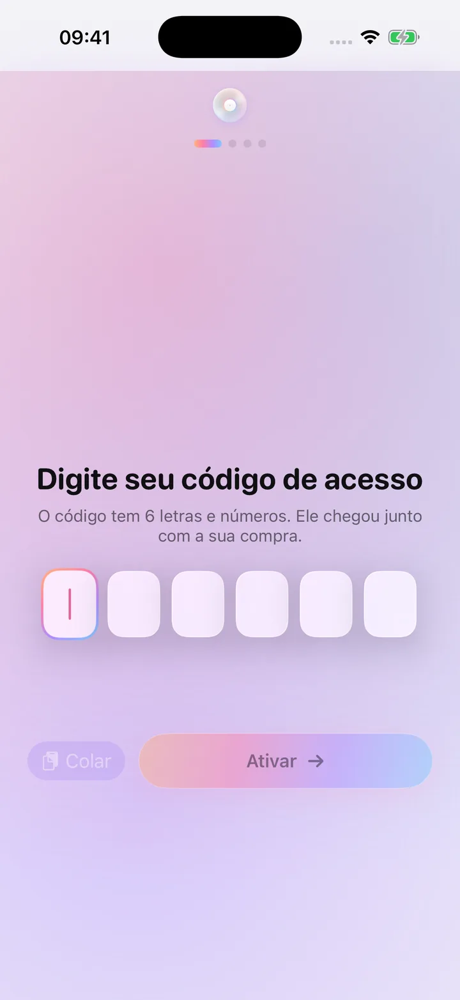
Recursos
Acompanhe cada verso na hora certa, linha por linha.
Ajuste graves, médios e agudos do seu jeito.
Baixe suas músicas e ouça sem internet, onde estiver.
Reviva o que você mais ouviu, num resumo cheio de cor.
A tela de bloqueio ganha o disco ou a fita que você escolheu.
Animações pensadas para render o dia todo sem esquentar o celular.
Pagamento único
R$ 5pagamento único
Baixe o app, entre com o seu código de teste grátis e, quando quiser, faça o upgrade. Ou compre aqui: o código vitalício aparece na hora depois do pagamento.
Este é o seu código vitalício:
Abra o Lume Music › Ajustes › Já sou vitalício e digite este código; depois crie seu PIN de recuperação.
Abra o app do seu banco, escolha Pix e leia o QR Code ou use o copia e cola. Valor: R$ 5,00.
Chave Pix: d0a9a4ea-96dd-4125-b161-1d7fc83ffd1d
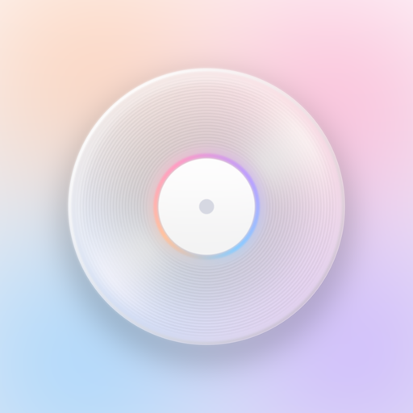
Escolha o seu aparelho e leve a Lume com você.
Toque em baixar, abra o arquivo e permita “instalar apps desconhecidos” se o celular pedir. Ver passo a passo.
Arquivo .ipa para instalar pelo LiveContainer ou SideStore (o app não está na App Store). Ver passo a passo.
Passo a passo
A instalação é rápida e segura. Veja abaixo o guia completo para Android (inclusive se aparecer bloqueio do Play Protect) e para iPhone.
Arquivo .apk · Instalação direta
Lume-Music-Android.apk.E se o Android ou o Play Protect bloquear?
.apk novamente.Arquivo .ipa · LiveContainer ou SideStore
.ipa (recomendamos LiveContainer ou SideStore).Lume-Music-iPhone.ipa.Já usa o Lume Music e quer atualizar? Basta baixar a versão nova e instalar por cima no Android ou importar de novo no LiveContainer/SideStore — suas playlists, curtidas e seu acesso continuam salvos.
Dúvidas
Toque em baixar para Android e abra o arquivo .apk. Se o celular pedir, permita “instalar apps desconhecidos” para o seu navegador. Depois é só abrir a Lume Music.
O app não está na App Store. Baixe o arquivo .ipa e instale pelo LiveContainer ou pelo SideStore, importando o arquivo no instalador que você já usa.
Sim. Na primeira abertura, a Lume pede um código de acesso de 6 caracteres e mostra na hora a validade — em meses ou vitalício.
Ao instalar, você ganha dias grátis sem digitar nada. O Vitalício custa R$ 5, em pagamento único, sem mensalidade.
No celular antigo, vá em Ajustes › Seu acesso › Transferir para outro aparelho e digite o código no novo. Perdeu o celular? Use seu código vitalício e o PIN de recuperação que você criou na compra. O vitalício é pessoal: funciona em um aparelho por vez.
Não. O vitalício é pessoal e funciona em um aparelho por vez; quem quiser também pode comprar o seu por R$ 5.
Sim, com as músicas baixadas. Baixe o que quiser ouvir e toque sem conexão.
Os arquivos são assinados e publicados no GitHub oficial do projeto. Baixe sempre pelos botões desta página.